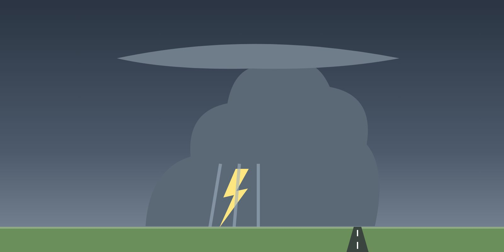

Lesson 01: Windshear: Definition, Sources and Effects
Lesson 1 of 5 · about 7 min
Learning objectives
Define windshear and microburst.
Identify the weather situations that produce low-level windshear.
Explain the effect of windshear on aircraft performance.

Microbursts from convective clouds are the most dangerous windshear.
Definition
Windshear is a change of wind speed and/or direction over a short distance, horizontally or vertically. Low-level windshear — below about 1,600 ft above ground — is the most dangerous, because it occurs during take-off and approach, when the aircraft is slow, close to the ground and has little energy margin (ICAO Doc 9817).
Sources
Thunderstorms and convective clouds — downbursts and microbursts, gust fronts and outflow, which can extend well away from the cell.
Frontal systems — especially fast-moving cold fronts with strong temperature contrasts.
Low-level jet streams and temperature inversions — wind changing sharply in speed or direction across the inversion layer.
Terrain and obstacles — strong winds over hills, buildings or hangars near the runway, and sea breezes.
The microburst
A microburst first gives a performance-increasing headwind, then a downdraft and a performance-decreasing tailwind. Avoid it; if caught, apply the windshear escape manoeuvre.
A microburst is a small, intense downdraft — typically less than about 4 km across — that spreads out on reaching the ground. It usually lasts only a few minutes. An aircraft entering it first meets an increasing headwind (performance increase), then a strong downdraft, then a tailwind (performance decrease). The pilot's natural reaction to the first phase — reducing thrust and pitch — leaves the aircraft badly placed for the dangerous second and third phases.
Effects
An increasing headwind or decreasing tailwind raises indicated airspeed and lift — the aircraft tends to rise above the path.
A decreasing headwind or increasing tailwind reduces indicated airspeed and lift — the aircraft sinks below the path.
A downdraft directly increases the descent rate.
The combination can exceed the aircraft's climb performance close to the ground.
Key takeaways
Windshear: change of wind speed or direction over a short distance; most dangerous below about 1,600 ft.
Sources: convection (microbursts), fronts, inversions and low-level jets, terrain.
Microburst: headwind gain, then downdraft, then tailwind loss — do not react to the first phase by reducing energy.
Knowledge check
Entering a microburst on approach, what is usually encountered first?
A tailwind
An increasing headwind and a performance increase
A strong downdraft
No change
Answer: B. The first phase is an increasing headwind that raises airspeed and lift — followed by downdraft and tailwind.
Training material only. It does not replace the Aircraft Flight Manual, FCOM, QRH, MEL or the Domestic Airlines Operations Manual, which always take precedence.